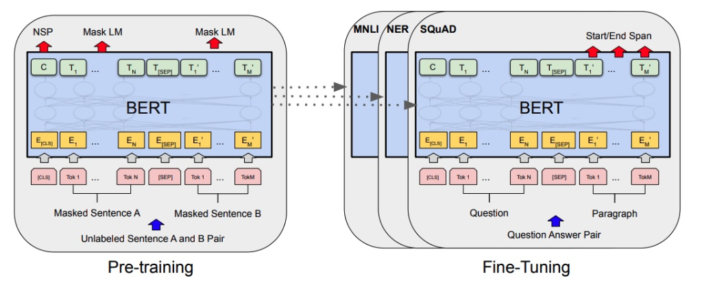
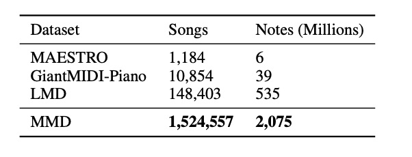

// intelixencia artificial · aprendizaxe profunda · música simbólica
MusicBERT: PLN e comprensión da música simbólica
Inspirado polo éxito dos modelos de preentrenamento en procesamento da linguaxe natural (PLN), un equipo de Microsoft Research Asia desenvolveu MusicBERT: un modelo preentrenado a gran escala para a comprensión da música simbólica. O proxecto aborda por primeira vez, de forma sistemática, os desafíos específicos que presenta a música fronte á linguaxe textual.
Que é MusicBERT?
MusicBERT é un modelo preentrenado a gran escala para a comprensión da música simbólica, encadrado no ámbito da aprendizaxe profunda (deep learning). Trátase dunha rede neuronal deseñada para aplicacións musicais como a clasificación de xéneros e estilos, a detección de emocións, a recomendación de cancións ou a predición de preferencias, entre outras.
A clave diferenciadora de MusicBERT é que traballa sobre música simbólica —aquela representada mediante datos estruturados como o formato MIDI— e non sobre audio en bruto. Esta distinción é fundamental: a comprensión da música simbólica implica interpretar relacións de altura, duración, compás, instrumento e ton a partir dunha codificación discreta, o que presenta desafíos moi distintos aos do procesamento do sinal de audio.
De BERT a MusicBERT: a tradición do PLN aplicada á música
O modelo parte da arquitectura BERT (Bidirectional Encoder Representations from Transformers), desenvolvida orixinalmente por Google para o procesamento da linguaxe natural. BERT aprendeuse mediante preentrenamento non supervisado sobre grandes cantidades de texto, e demostrou que as representacións aprendidas deste xeito resultan transferibles a un amplo espectro de tarefas concretas mediante o fine-tuning.
O diagrama seguinte ilustra o proceso xeral de preentrenamento e axuste fino (fine-tuning) da arquitectura BERT, sobre o que MusicBERT constrúe a súa lóxica de funcionamento aplicada ao dominio musical:

Non obstante, a música simbólica presenta complexidades estruturais que non aparecen no texto. A información musical combina dous tipos de datos de natureza moi diferente: por un lado, datos estruturados como o compás ou a posición métrica; por outro, datos de natureza máis heteroxénea como o tempo, o instrumento ou o ton. Esta dualidade esixiu adaptacións coidadosas no deseño de MusicBERT, entre as que destacan:
- Unha codificación OctupleMIDI eficiente e universal, que representa simultaneamente oito atributos de cada nota musical nun único token.
- Unha estratexia de enmascaramento a nivel de compás (bar-level masking), adaptada á estrutura rítmica da música, en lugar do enmascaramento a nivel de palabra propio do PLN.
- Un corpus de preentrenamento a gran escala construído especificamente para o proxecto: o Million MIDI Dataset (MMD).
O corpus MMD: un millón e medio de cancións simbólicas
Un dos obstáculos históricos para o preentrenamento de modelos musicais era a falta de datos simbólicos a gran escala. Os conxuntos de datos existentes resultaban insuficientes para o propósito: MAESTRO (Hawthorne et al., 2019) conta con algo máis de mil interpretacións de piano; GiantMIDI-Piano (Kong et al., 2020) chega a dez mil; e o maior conxunto de libre acceso ata ese momento, Lakh MIDI Dataset (LMD), contén ao redor de 100.000 cancións.
Para superar esta limitación, o equipo construíu o Million MIDI Dataset (MMD): un corpus de música simbólica rastrexado e depurado da web, que abarca máis dun millón e medio de cancións de xéneros diversos —rock, clásica, rap, electrónica, jazz e outros—. O proceso de construción implicou tres etapas: primeiro, a recolección masiva de ficheiros MIDI de múltiples fontes; a seguir, a limpeza de ficheiros malformados ou baleiros; e, finalmente, a conversión á codificación OctupleMIDI e a deduplicación dos arquivos.
A deduplicación resultou especialmente relevante, dado que moitos ficheiros MIDI conteñen o mesmo contido musical aínda que presenten valores hash diferentes. Para detectar estes casos, o equipo desenvolveu un método que omite todos os atributos agás o instrumento e o ton, obtén o hash da secuencia resultante e úsao como pegada dixital do ficheiro. Tras este proceso, o MMD quedou composto por 1.524.557 cancións e máis de 2.075 millóns de notas en formato OctupleMIDI.

Tras aplicar o mesmo proceso de limpeza e deduplicación ao LMD, o seu tamaño real quedou en 148.403 cancións —moi por debaixo das cifras habitualmente citadas—, o que reforza a necesidade do MMD como corpus de referencia.
Catro tarefas de comprensión musical
Os experimentos demostraron que MusicBERT proporciona melloras significativas fronte a liñas de base anteriores en catro tarefas fundamentais da comprensión musical simbólica:
- Finalización dunha melodía
- Suxerencia de acompañamento
- Clasificación de xénero
- Clasificación de estilo
Estes resultados confirman que as técnicas de preentrenamento desenvolvidas no campo do PLN son transferibles ao dominio da música simbólica, sempre que se adopten as adaptacións estruturais necesarias. Non basta con aplicar directamente un modelo de linguaxe a datos MIDI: a estrutura métrica, a polifonía e a natureza discreta dos eventos musicais esixen estratexias específicas que MusicBERT aborda de forma explícita.
Conclusión e perspectivas
MusicBERT representa un paso significativo na aplicación dos modelos de preentrenamento ao dominio musical. A combinación da codificación OctupleMIDI, o enmascaramento a nivel de compás e o corpus MMD proporciona unha base sólida para o desenvolvemento de sistemas de comprensión musical a gran escala.
Os propios autores apuntan como liñas de traballo futuro a extensión de MusicBERT a outras tarefas de comprensión musical de maior complexidade analítica: o recoñecemento de acordes, a análise da estrutura formal e a harmonización automática. O modelo abre tamén a posibilidade de explorar a transferencia entre xéneros e a xeración musicalmente coherente a partir de representacións simbólicas aprendidas.
Fonte
- Zeng, M., Tan, X., Wang, R., Ju, Z., Qin, T. e Liu, T.-Y. (2021). MusicBERT: Symbolic Music Understanding with Large-Scale Pre-Training. Microsoft Research Asia. arxiv.org/pdf/2106.05630.pdf
- Hawthorne, C. et al. (2019). Enabling Factorized Piano Music Modeling and Generation with the MAESTRO Dataset. ICLR 2019.
- Kong, Q. et al. (2020). GiantMIDI-Piano: Learning Generic Classical Piano Transcription. arXiv:2010.07061.
- Raffel, C. (2016). Learning-Based Methods for Comparing Sequences, with Applications to Audio-to-MIDI Alignment and Matching. Tese doutoral. Columbia University. [Lakh MIDI Dataset]
- Devlin, J. et al. (2019). BERT: Pre-training of Deep Bidirectional Transformers for Language Understanding. NAACL 2019.